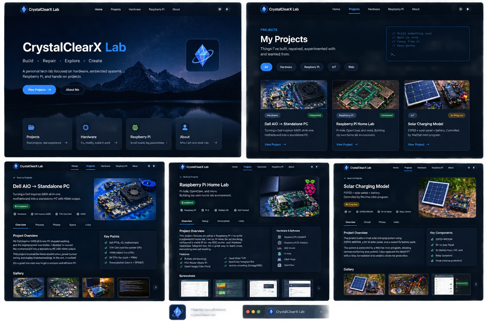

PROJECTS / INDEX
My Projects.
Things I've built, repaired, experimented with, and learned from. Click a card to open the full project log.

HardwareCompleted
Dell AIO → Standalone PC
Motherboard conversion and HDMI troubleshooting.
View project →
Raspberry PiRunning
Raspberry Pi Home Lab
Pi-hole, networking, self-hosted services and automation.
View project →

IoTIn progress
Solar IoT Model
ESP32 solar charging and relay-controlled output.
View project →
WebIn progress
CrystalClearX Lab
This website: Cloudflare Workers, static assets, and experiments.
You are here →